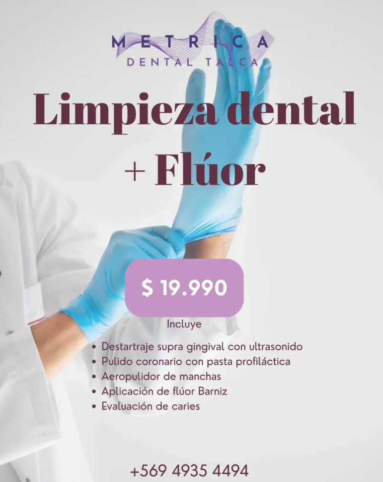

Limpieza dental + flúor
$19.990 CLP
Cuidado preventivo para tu sonrisa
La promoción incluye
- Destartraje supragingival con ultrasonido.
- Pulido coronario con pasta profiláctica.
- Aeropulido de manchas.
- Aplicación de barniz de flúor.
- Evaluación de caries.
Ver imagen de la promoción

 SERVIMAT™
SERVIMAT™